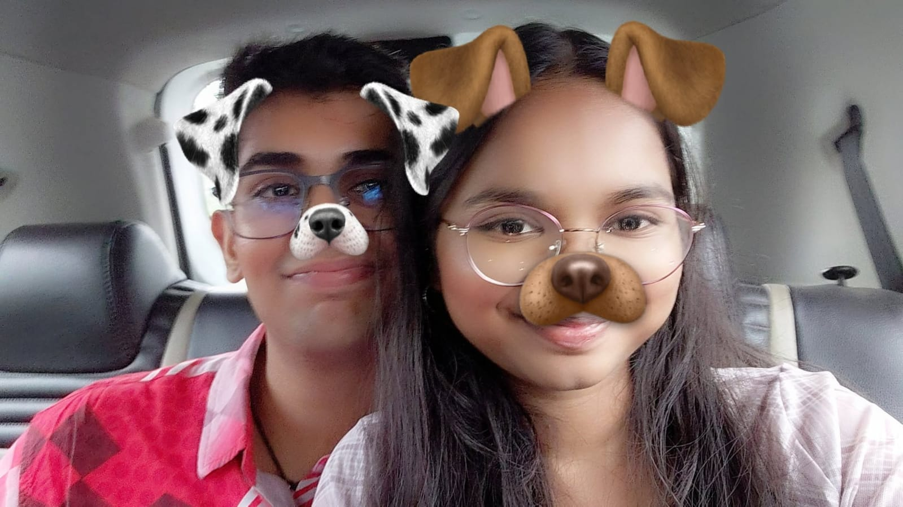
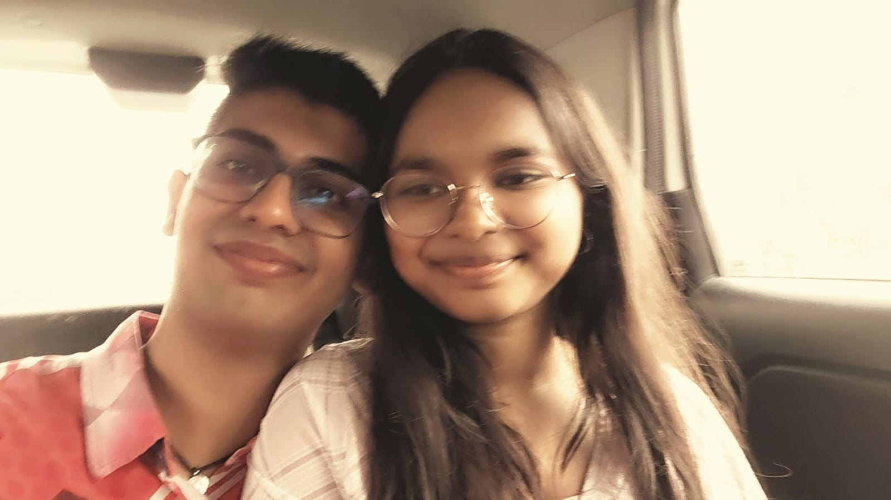
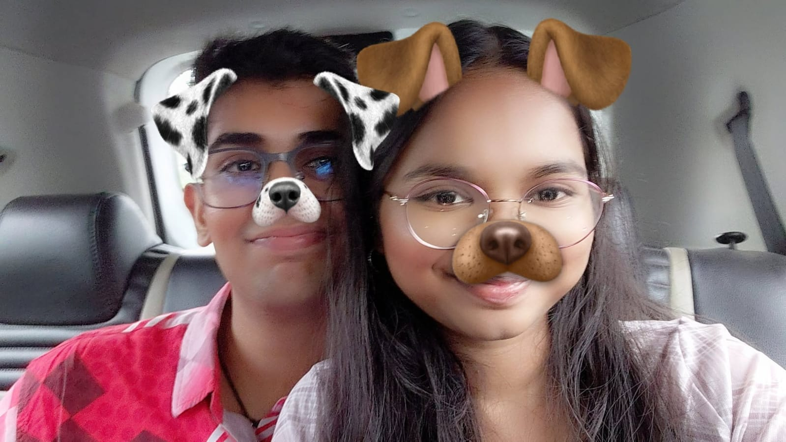
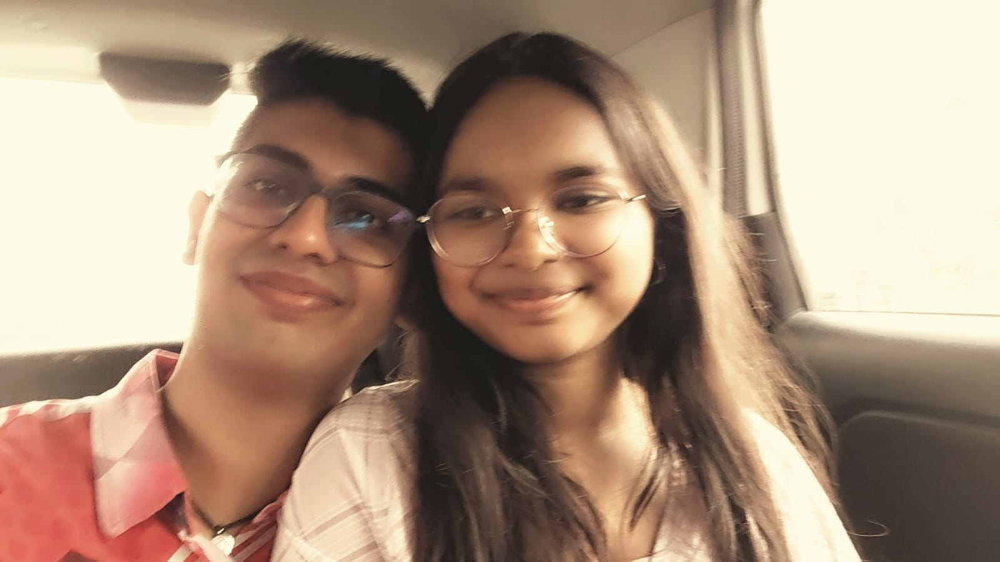

Ittt wass the firsttt time we weree flying back homee togetherrr.. We hadd just startedd datingg smtimee backkk and in the flighttt we were very upsett we didnt get to sit together.. After we landeddd we touched handss soo manyy timees dont know if it was intentional or nott🤭🤭. I wass soo nervousss to askkk buttt i finallyyy did. Can we holdd hands i askedd and thenn instantly you were likee haa jaise u were waiting me to askk. Althoughh we held handss only for likee 5 10 secondss it wass the besttt feelingg my heartbeatt was soo fasttt writing this noww alsoo bhag raha haiii. I felttt i foundd the girl i wanteddd and nowww i cant goo a dayy withoutt holdingy handss whenever we goo out i makee suree we hold handss and we didnt hold hands the right way the first time buttt then uskee baad we always interlace our handss while we walkk. Everytimee we hold handss it givess me the feeling of holding hands for the firsttt timeee. The wayy u dont closee your fingers when youre angry at mee but still wantt to hold my handd iss soooo cuteeeee. I wanttt to holds your handss foreverrrr❤️♾️♾️
Our First Kiss 💋 +
Ittt had been 15daysss since we meet eachhhh otherrrr andd all we did in thoseee last feww daysss weree soo romantic talksss stayinggg upp till 4 talkking abouttt howw we would kiss each other dropping subtle hints throughhh reelsss. I really wanteddd to kisss you thatt dayyy i made it up in my mindd that i will kiss herr. Firsttt i thoughttt ill ask in the planeee but thenn we were havingg suchh cutee momentss laying on each others shoulderrr holdinggg handsss i didnt want to causee ukk bohot overthinkingg and alsoo it would be thee first kiss soo i wantedd it to be a little more private not in public soo i waited waited bohottt zyadaaaaa. Andd thenn i finallyyy i askedddd my heartbeattt was sooo fasttt and thenn u said cab haii i wass soo disappointed but i was likeee thekee issokayy she might not be readyy yett and thenn sooo unexpected vitt aane kee baad u kissed meee i was likeee naii proper nai thaa and pulled youu backkk and kissed youuu i cann replayyy the wholeeee thingg like omgaoooo and nowww tohh cant stopp kissing youu onlyyy bestt feeling it isss😋😋
Our First Outing 💑 +
I wasss sooooo excitedddd whenn u starteddd talkingg abt all the thingsss thatt we'll goo outtt roamm soo manyyy placess andd doo soo many thingsss togetherrr and youu indirectly or directly put it in my chotu sa brainn to askk youu outtt anddd youu tolddd yesssss itnaaa happyyy i wassss it wouldddd bee the firsttt timee we spent soo manyy hourss togetherr withoutt having to sayy a bada wala goodbyeee. I justttt wanteddd it to goo youreee wayy isliyeee when u asked kaha jaana hai kyaa krnaaa haii i wass likeee youuu onlyyy decideee i justtt want to be with youuu cutieeeeee.. And the placeeee u saiddd wass sooo prettyyy no prettier than u ofccc but yesss and it hadd a beachhhhh sooo i wass likeee definitely we'll goo idharrr onlyyy... And thenn thatt nighttt we bothh couldntttt sleep onlyy we decided to sleep at 2 and both kept on extending timeeee and it was likee 4 smth when we went to sleep and thenn the dayy finallyy cameee. I couldnttt decideeee onlyyy what to wearr like for 20minss and thenn i was like ill wear thisss and thenn i sawww youuu in thatt pinkkk dressss soo cuteeeeeuuuu and pretty u wereee looking my jawww onlyyy dropped likee how can someonee be soo prettyyyy. Andd thenn thee cabbb rideee cameee wee weree sitting sooo closeeeeeeee and thennn i wanteddd to kisss u sooo badlyyy again i wasss nervoussss likeeee forr 10 minsss i was j gainingg the courageee to askk u if we can kisss and then i askeddd and thenn u soo cutelyyyyy closed youree eyesss and nodded yourrr headddd and thenn the addiction startedd 🤭🤭 it wass soo shorttt and cuteeeeee. Thennn wee reachedddd andd sat on the benchh watchingg the oceannn and j sitting in silenceeeee soo peacefull it wasss being with youuuu anddd thennn we walkeddd backkk holdinggg handss and u helddd my armmm 🥰🥰🥰 thennn we walkeddd on the roaddddd and sattt on the beachhhh andd thennn isss theeee timeeee wee haddd crazyyy walaaaa kisss u wayy you openedd yourr lipsss for themmm too gettt eatennn and thee wayy u kissed myy lipsss omgaoo babyyyy andd theeenn i grabbedd yourr waisst and pulledddd u closeeee to meeee and wass kissing yourr lipsss and eating youree cheekss the wayy u weree blushingggg 🥰🥰 thee roadd walkk backkk andd i pulledd yourr waisttt and thennn couldntt stoppp pulling youu closer and u couldnt look intoo my eyesss onlyyyyy... And thenn u pulled mee and we ateee eachother likee anything andd thenn we haddd suchh a longgg huggg sooo comforting itt wasss the bestttt i felttt like a babyyyyyyyy i didnttt want to gooo onlyyy butt thenn timeee agyaa jaaneee and thenn that 7minss to 5minsss walaa kisssss thatt time i would haveee eatenn u onlyyy puraaa if vit hadnttt comeee but aagyaa thaa whatttt a dayyy ittt wasss now toh im nottt at all nervousss to eatt youu see improvement 🥰🥰.
💖 A Little Note 💖
Palakkkk I loveee youuu sooo mucchhhh. You have changeddd my lifeeee sooo muchh i cant imagine my life without you babyyy... Soo manyyy monthss feel like soo less if its with the right person and i feel thats you. You make me feel soo good and doo soo many things for me ki kitna bhi try krlu cant matchh. I cann see how much u love me in your eyes and its the best feeling when someone loves you back the way you doo. You make me feel and wanted and heard and comfortable. I can literally share everything with you i dont even have to think thoda also cause i know youll be by my side. The way u take care of me after my family no one has and now you are a part of my family cutiee. I want us to grow older together and roam all around the worldd achieve everything we want in life together with the support of each other get married have kidss and doo everythingg togetherrr. I lovee youu bohottt zyadaaa i cant even express how muchhh i have never felt the way i do with you. Doing anything for u doesnt feel like kaam but instead like a pleasure baby..
No matter how many memories we make,
my favorite one will always be you choosing me.
 


